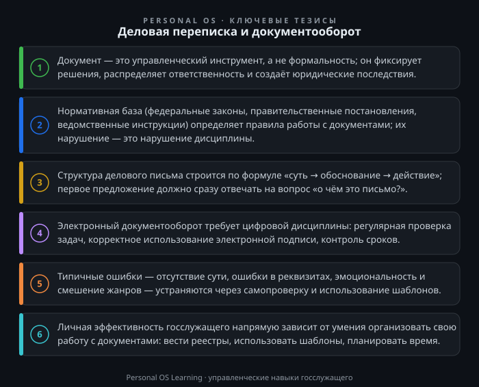

Каждое утро в любом государственном органе начинается одинаково: открывается система электронного документооборота, и на экране появляется список новых писем, поручений, запросов. От того, как вы ответите на эти письма, как оформите служебную записку или подготовите проект решения, зависят не только сроки исполнения поручений, но и ваша репутация как профессионала. В государственной службе документ — это не просто бумага или файл. Это инструмент управления, юридический факт, основание для принятия решений и, в конечном счёте, лицо органа власти перед гражданами и вышестоящими инстанциями.
Умение грамотно вести деловую переписку и работать с документами — это не «канцелярская рутина», а ключевая управленческая компетенция. Руководитель, который не умеет ставить задачу письменно, обречён на недопонимание в коллективе. Специалист, который пишет сумбурные ответы, создаёт риски для всего органа. В этой статье мы разберём, как устроен документооборот в госсекторе, какие правила деловой переписки обязательны к применению, и дадим конкретные инструменты для повышения вашей личной эффективности.
Работа с документами в государственных органах — это не вопрос личных предпочтений. Существует жёсткая нормативная база, которая определяет, как должен выглядеть документ, какие реквизиты он должен содержать и как он должен двигаться внутри органа.
Базовым актом является Федеральный закон «Об информации, информационных технологиях и о защите информации» Федеральный закон «Об информации, информационных технологиях и о защите информации», который устанавливает правовые основы работы с электронными документами и электронной подписью. Кроме того, каждое ведомство имеет свой регламент внутреннего документооборота, разработанный на основе Правил делопроизводства в федеральных органах исполнительной власти Постановление Правительства РФ «Об утверждении Правил делопроизводства в федеральных органах исполнительной власти». Эти правила устанавливают единые требования к составлению и оформлению документов.
На практике это означает следующее: в каждом органе есть инструкция по делопроизводству, которая определяет, какие бланки использовать, как оформлять реквизиты, каковы сроки прохождения документов. Прежде чем писать что-либо, убедитесь, что вы знаете требования вашего конкретного органа. Типовая ситуация: специалист готовит ответ на обращение гражданина, но оформляет его на бланке для внутренней переписки. Формально это нарушение, которое может привести к возврату документа из канцелярии и срыву срока.
Помните о трёхуровневой иерархии: федеральное законодательство → ведомственные нормативные акты → локальные инструкции. Если возникает противоречие между ними, приоритет у акта более высокого уровня.
В госслужбе мы работаем с несколькими типами документов, и каждый выполняет свою функцию. Понимание этой логики — половина успеха.
Входящие документы — это то, что поступает к вам из внешнего мира: письма от граждан, запросы от других ведомств, поручения вышестоящих органов. Вся работа с ними строится по принципу «сначала зарегистрировал — потом читаешь». Регистрация в системе электронного документооборота (СЭД) — это момент, с которого начинается отсчёт срока исполнения. Ключевое правило: никогда не работайте с незарегистрированным документом, если он поступил официально. Исключение — проект документа, который вам прислали для согласования, но и его лучше зарегистрировать как внутренний.
Исходящие документы — это то, что вы отправляете наружу. Здесь главная задача — обеспечить юридическую значимость. Исходящее письмо должно иметь номер, дату, подпись уполномоченного лица. Если вы отправляете ответ на запрос, обязательно указывайте ссылку на номер и дату входящего документа. Только так адресат поймёт, на что именно вы отвечаете.
Внутренние документы — служебные записки, докладные, объяснительные, проекты приказов. Их особенность в том, что они не выходят за пределы органа, но именно они формируют управленческую ткань. Служебная записка — это инструмент коммуникации между подразделениями. Докладная — сигнал руководителю о проблеме. Проект приказа — управленческое решение в стадии подготовки.
Самая распространённая ошибка госслужащих — смешение жанров. Специалист, который хочет донести до руководителя проблему, пишет эмоциональное письмо в стиле «вот опять они не сделали». Вместо этого нужна докладная записка с фактами, цифрами и предложениями по решению. Документ — это не эмоция, это управленческий инструмент.
Деловое письмо в государственном органе подчиняется строгим правилам композиции. Запомните формулу: суть → обоснование → действие. Сначала вы сообщаете, о чём идёт речь. Затем объясняете, почему это важно или на каком основании действуете. В конце формулируете, что именно требуется от адресата.
Рассмотрим типичную ошибку. Специалист пишет: «В связи с необходимостью подготовки к заседанию комиссии, а также принимая во внимание ранее направленные материалы, и во исполнение протокола совещания от 15 мая, прошу рассмотреть вопрос о возможности предоставления информации...». Это классический канцелярит, который заставляет читателя продираться через дебри. Как надо? «Прошу направить в мой адрес данные о количестве обращений граждан за I квартал. Срок — до 25 мая. Информация необходима для подготовки доклада к заседанию комиссии». Первая фраза — суть. Вторая — срок. Третья — обоснование.
Язык делового письма должен быть нейтральным, точным и однозначным. Избегайте модальных слов, которые размывают смысл: «желательно», «по возможности», «наверное». Если вы просите — формулируйте чётко. Если вы сообщаете — сообщайте факты без оценок. Сравните: «Работа была выполнена некачественно» и «В представленном отчёте отсутствуют данные по пунктам 2 и 3 технического задания». Второй вариант корректен, потому что его можно проверить.
Ещё один важный аспект — уважение к адресату. Даже если вы пишете ответ на необоснованную жалобу гражданина, вы не имеете права использовать формулировки, унижающие достоинство. Стандартная формула: «Сообщаем, что ваше обращение рассмотрено. В соответствии с действующим законодательством...» — и далее по существу. Никакой иронии, никаких оценок личности.
Современный госслужащий работает в системе электронного документооборота. Это не просто «программа для писем», а полноценная среда управления. В СЭД вы видите маршруты движения документов, контролируете сроки, согласовываете проекты. Умение работать в СЭД — это базовая цифровая грамотность, без которой невозможно представить госслужбу.
Ключевое отличие электронного документооборота от бумажного — прозрачность. Каждое действие фиксируется: кто посмотрел документ, кто наложил резолюцию, кто завизировал. Это накладывает особую ответственность. Если вы получили документ на согласование и не отреагировали в течение трёх дней — это будет видно всем участникам процесса. Поэтому первое правило работы в СЭД — регулярно проверяйте входящие задачи и не оставляйте документы без движения.
Второе правило — электронная подпись. Юридическую значимость электронному документу придаёт электронная подпись, как правило усиленная квалифицированная; конкретные требования к её виду определяются нормативными актами вашего органа. Никогда не передавайте свою электронную подпись коллегам и не подписывайте документы за руководителя без соответствующих полномочий. Это не формальность — это вопрос юридической ответственности.
Третье правило — документ должен быть читаемым. В электронной переписке часто возникают проблемы с форматированием. Используйте стандартные шрифты (Times New Roman, Arial), не злоупотребляйте выделением, проверяйте, как документ выглядит после конвертации в PDF. Документ, который «поехал» при печати или открывается с искажениями, — это брак в работе.
Особое внимание уделите срокам. В СЭД сроки исполнения обычно контролируются автоматически, но именно вы несёте персональную ответственность за их соблюдение. Если вы понимаете, что не успеваете к сроку, — заранее готовьте служебную записку о продлении срока с обоснованием причин. Ждать, пока срок истечёт, — худший вариант.
Давайте разберём несколько типичных ситуаций, с которыми сталкивается каждый госслужащий.
Ошибка 1: «Письмо без сути». Специалист пишет несколько абзацев, но адресат не может понять, что от него хотят. Причина — отсутствие структуры. Решение: перед написанием письма сформулируйте для себя одно предложение: «Я пишу это письмо, чтобы...». Если это предложение не получается — вы не готовы писать письмо.
Ошибка 2: «Игнорирование реквизитов». Отправляя письмо, специалист забывает указать ссылку на входящий номер, или неверно указывает должность адресата, или путает название организации. Это создаёт хаос в документообороте и затягивает исполнение. Решение: сверяйте реквизиты по справочнику, а ещё лучше — используйте шаблоны, утверждённые в вашем органе.
Ошибка 3: «Эмоциональная переписка». Госслужащий вступает в полемику с адресатом, отвечает на провокации, использует оценочные суждения. Помните: деловая переписка — это не чат с друзьями. Каждое ваше слово может быть использовано в суде, в СМИ, в обращении граждан. Эмоции — это риск. Факты — это защита.
Ошибка 4: «Смешение документов». Специалист отправляет служебную записку внешнему адресату или, наоборот, оформляет ответ на обращение гражданина как внутренний документ. Решение: перед отправкой задайте себе вопрос: «Куда идёт этот документ?» Если наружу — это исходящее письмо на бланке органа. Если внутри — служебная записка.
Ошибка 5: «Просроченные поручения». Специалист получил поручение, но отложил его «на потом», а потом забыл. Решение: вносите все поручения в личный календарь с напоминаниями, даже если СЭД это делает автоматически. Дублируйте контроль — это ваша страховка.
Помимо знания правил, существуют практические приёмы, которые помогут вам работать быстрее и качественнее.
Создайте личный шаблон ответа. Если вы часто отвечаете на однотипные запросы (например, о предоставлении информации или о рассмотрении обращений), разработайте для себя несколько шаблонов. Это не значит, что вы будете рассылать одинаковые письма — шаблон задаёт структуру, а содержание вы адаптируете под каждый конкретный случай. Это экономит 20-30% времени.
Используйте правило «одного экрана». Деловое письмо должно быть составлено так, чтобы адресат мог охватить его взглядом, не прокручивая документ. Если письмо занимает больше одной страницы — выносите детали в приложение. В самом письме оставляйте только суть и действие.
Ведите личный реестр задач. Даже если у вас есть СЭД, заведите простую таблицу (Excel или Google Sheets), где вы фиксируете все задачи, сроки, ответственных. Это ваш личный инструмент контроля. Раз в неделю (например, в пятницу) просматривайте реестр и отмечайте статусы. Это поможет не потерять ни одного поручения.
Практикуйте «чтение с карандашом». Когда вы получаете документ на согласование, не читайте его «по диагонали». Читайте с вопросом: «Что здесь может пойти не так?» Ищите неточности в цифрах, несоответствия в ссылках, неоднозначные формулировки. Ваша задача — не пропустить ошибку, а найти её до того, как документ уйдёт наружу.
Перед тем как перейти к выводам, выполните несколько упражнений. Они займут не более 30 минут, но дадут немедленный результат.
Задание 1. Аудит вашего исходящего письма (15 минут).
Возьмите последнее исходящее письмо, которое вы подготовили (или подготовьте новое, если это необходимо). Проверьте его по чек-листу:
Если хотя бы на один пункт вы ответили «нет» — переделайте письмо.
Задание 2. Реструктуризация «плохого» письма (15 минут).
Возьмите любое письмо из вашей практики, которое показалось вам неудачным (или составьте типовой пример). Перепишите его по формуле «суть → обоснование → действие». Сравните оба варианта. Оцените, сколько времени сэкономит адресат при чтении вашего нового варианта.
Задание 3. Составление личного шаблона (20 минут).
Определите, какой тип писем вы отправляете чаще всего (например, ответ на запрос о предоставлении информации). Составьте шаблон такого письма с пропусками для переменных данных. Сохраните его в отдельной папке «Шаблоны» на рабочем столе. Используйте его при следующей аналогичной задаче.
Задание 4. Анализ вашей СЭД (15 минут).
Откройте вашу систему электронного документооборота и изучите, какие задачи находятся у вас в работе. Проверьте, нет ли документов с истекающим сроком (1-2 дня). Составьте список из трёх задач, которые вы выполните в первую очередь. Этот простой приём поможет вам взять контроль над текущей нагрузкой.
Деловая переписка и документооборот — это не бюрократическая нагрузка, а система, которая обеспечивает порядок и управляемость в государственном аппарате. Каждый документ, который вы создаёте, — это вклад в репутацию вашего органа и в вашу собственную профессиональную репутацию. Овладев навыками грамотной переписки, вы не только снизите риски и сэкономите время, но и станете более эффективным управленцем.
Начните с малого: наведите порядок в своих задачах, создайте шаблоны, перестаньте писать «воду». Через месяц вы заметите, что коллеги стали быстрее отвечать на ваши письма, а руководитель перестал возвращать документы на доработку. Это и есть признак профессионализма.

Открыть инфографику в полном размере ↗
Отправить отметку в базу Пройти тест по теме